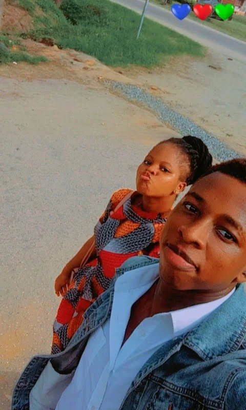
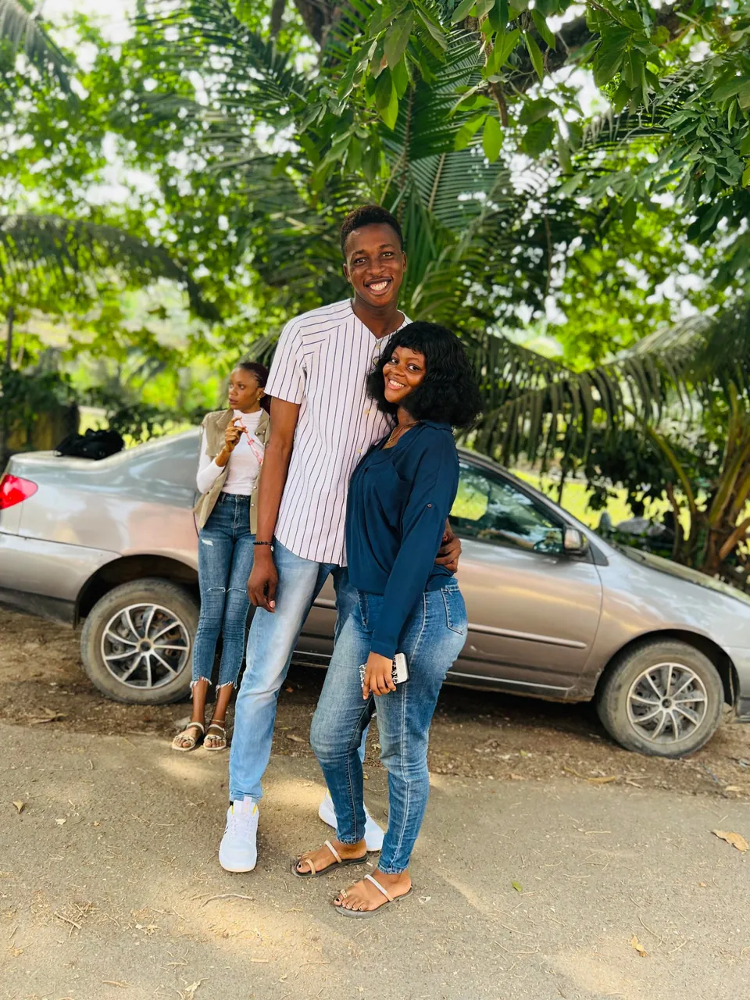
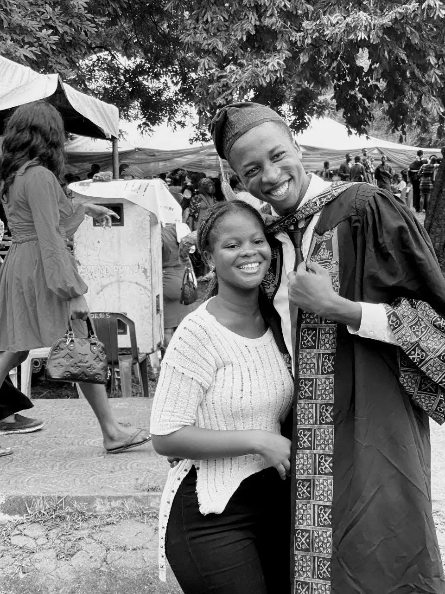
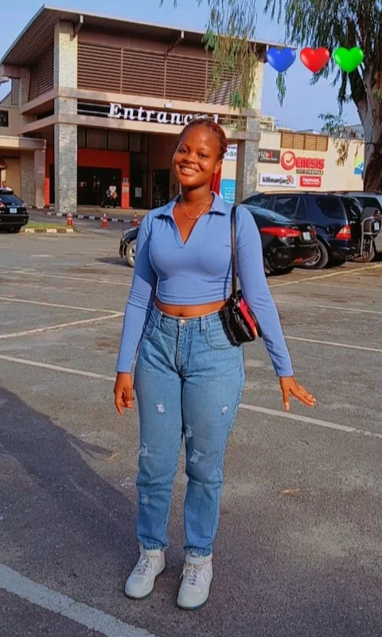

From a very un-random Sunday to our second anniversary
Same receipts, bouncier road. Hold on tight.
↓

Photo 1 of 60+ (we lost count)
Receipt No. 001
ItemOne Sunday selfie
Quantity60+, and counting
CulpritMe. No regrets.
A random Sunday that was not random at all. We had been to church together, and on the way home I took one look at you and decided the road was now my photo studio. This was photo number one. Sixty-something more followed, and I would happily have taken sixty more. Look at the kiss you blew at the camera, and look at me trying to stay calm about it. I failed, by the way. This one is in the book for the kiss alone.

Sports day, final year week
Receipt No. 002
ItemOne sports-day cameo
EventMy final-year week
InvitedNobody. She came.
Final year week, sports day, and there I was in my white baseball shirt and sneakers, feeling like the main character. Then you showed up that morning, just to take pictures with me. Nobody asked you to. You never wait to be asked; you simply turn up for every milestone I have, as if it were written into the contract. (It is. Clause one. Look it up.) And look at us: me standing tall, you tucked under my arm like you were made to fit there.
Sign-out day. Volume up, please.
Receipt No. 003
ItemOne T-shirt, signed
PaperWritten. Survived.
VolumeHers. Fully on.
Sign-out day: the day you write your final paper at the university, and everybody celebrates by signing your white T-shirt with markers until it looks like a very proud notice board. I walked out of that last paper tired and covered in ink, and you screamed straight into the camera: "Yoooo! My baby is a graduateee!" Please turn your volume up for this one. I have watched it more times than I will admit, and it lands the same way every time: that voice, that joy, that we-did-it feeling.
Till infinity and beyond
Receipt No. 004
ItemTwo shower caps
StyleZero shame
MessageInfinity and beyond
A quick break from the milestones, because we are not all gowns and signatures. Here we are in shower caps, making a heart with our hands and telling the whole world, "Till infinity and beyond." Look at the size of those smiles. Nobody asked us to look this ridiculous, and nobody could stop us from looking this happy. If love has a uniform, I am afraid it is this one.
She boops, I laugh

Gown: mine. Smile: ours.
Receipt No. 005
ItemOne gown, one cap
FlavourBitter and sweet
WitnessThe best one
My convocation, in black and white, though you can see the colour in our smiles. It was bitter, because I was about to leave you behind at the university. It was sweet, because I was about to go out and make a name for myself, with you standing right there, proud enough for the both of us. You pressed your hand to my face, I laughed with my eyes shut, and the camera caught it at exactly the right second. If I could keep just one moment of that day, it would be that one.
Year two: movie date, snack crimes
Receipt No. 006
EventOur 2nd anniversary
SnacksAll manner of junk
DietSuspended by consent
Our second anniversary, and the plan was simple: watch a movie, then eat every kind of junk we could get away with. We got away with a lot. (Nobody has to know how much.) On the way in we stopped for a quick video, and you finished it with a little twirl for the camera, because of course you did. Two years in, and the best part of any movie is still the person sitting next to me.

Bonus exhibit: shining
Receipt No. 007
ItemOne unfairly good photo
ReasonBecause why not
ApologyNone offered
No gown, no signatures, no big milestone to explain this one. Just you in front of the cinema, glowing like the whole day had been arranged around you, and me deciding on the spot that this was going in the book. Because why not? It is my book, and you are the best thing in it.